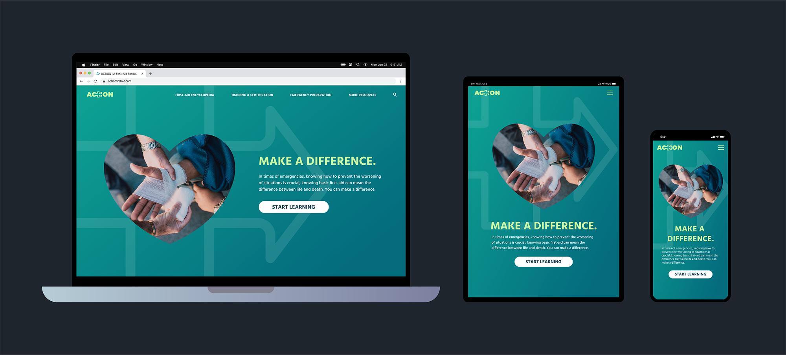

Project Overview
The Product
ACTION is an app and website that aims to provide accessible first aid education to anyone and everyone.
My Role
UI/UX Designer and Researcher
Project duration
January 2023 - February 2023
Tools
Figma, Adobe Illustrator, Adobe Photoshop
The Problem
Quick and proper first aid can mean the difference between life and death, but many people lack the knowledge to help. According to the British Red Cross, 59% of deaths from injury could potentially be prevented if more people stepped in with simple first aid.
The Goal
ACTION's first aid app aims to provide users with a reliable resource for first-aid information that can be accessed even in areas without wifi or cellular data.
Research
Research Summary
First aid knowledge is something that benefits every individual. So in order to better understand how to convey information in a way that is digestible for a wide audience, I created personas, empathy maps, and conducted online research to get a better idea of how existing first aid resources accomplish their goals.
I found that one of the primary reasons why people don't step in to help during emergencies is lack of knowledge and confidence in having the ability to help. These reasons are caused by a multitude of reasons, one being accessibility to said information.
Paint Point: Confidence
Not knowing what to do in an emergency situation impedes on one's ability to take meaningful action.
Pain Point: Accessibility
While online training courses are available, many do not know how to start or may not have the time/money to spend on classes.
Personas
Nina Agrawal is a college freshman and nature enthusiast who needs a first aid resource that she can access at all times because she wants to be able to know how to react in an emergency situation when she is out and about.
Michael Adams is a stay-at-home father who needs a resource to learn how to administer proper first aid because he wants to make sure that he knows how to help his children in the case of any medical emergencies.
User Journey Map
For this project, I took a Progressive Enhancement approach by starting with a mobile app design. My first personal, Nina Agrawal, is often out and about, so a mobile app might suit her needs the best; therefore, I mapped out her user journey to get a better idea for how my app might help her achieve her goals.
Sketches & Wireframes
Ideation
During this process, I drafted iterations of the home screen as well as other screens of key features that I would like to include in my design and was able to get a better idea of how I might go about addressing user pain points.
Wireframes
The ACTION app’s main goal is to help give users, even those without proper first aid training, the confidence to help out in an emergency situation.
So a prominent “Emergency” button is available on the home screen to guide users that need urgent advice. Additionally, the “Search” feature includes a mic button in case the user’s hands are occupied.
Lack of accessibility to first aid knowledge was one of the pain points that I identified earlier so ACTION’s app is designed to function both as an immediate guide and an educational tool.
The “i” button opens up an informational window that defines the current first aid entry and explains to the user how to identify symptoms of said entry. The “Volume” button functions as a play button that activates an audio recording that relays all of the information in the entry to the user out loud.
Part of building confidence in acting during an emergency is knowing you have the tools to prepare for one. Therefore, ACTION’s app includes a section dedicated to helping users prepare for emergency situations.
Checklists for basic first aid and everyday emergencies are available for users as well as more extensive articles on how to prepare for disasters.
Low-Fidelity Prototype
Once I compeleted drafting the basic wireframes of my app, I began transforming the screens into a low-fidelity prototype to create a user flow for future user testing.
View Lo-Fi PrototypeUsability Study
In order to test and garner some feedback to further improve my design, I conducted an unmoderated usability study. The study was conducted via a Google Form and I provided participants with tasks within my prototype to complete.
The overall feedback regarding my design was positive. 5 out of the 6 participants were able to complete every task with relative ease and enjoyed their experience. However, 2 out of the 6 participants ran into some obstacles when trying to find more information about a given first aid entry.
Therefore, I concluded that I could proceed to the next step with the current design, but some of the iconography needed more clarification.
Final Designs
Mockups
After adjusting my lo-fi prototype according to user feedback, I began refining and considering the visual aspects of my design.
I carefully selected a color palette and designed my own graphics and iconography. For ACTION's logo, I combined the well known medical cross with an arrow to symbolize movement or taking "action" in a medical emergency.
Design Elements

Responsive Website Design
After completing the designs for ACTION’s app, I started designing a responsive web design. While the app is designed to be more of an on-the-go first aid resource, I designed the website to cater towards users with more reliable access to the internet and time to learn about first aid more extensively.
Conclusions
Impact
ACTION gives users a more accessible and convenient way to learn how to react to and prepare for emergencies with greater confidence.
Takeaways
Sometimes it can be difficult to anticipate how users will interpret your designs which is why it is so important to conduct usability studies with a wide variety of individuals.